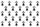
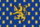

任务（英文：Mission）在1.25版本之后以“树”的形式呈现，大多数情况下完成一个任务将获得奖励并开启后续任务。大多数国家的任务树均以通用任务为蓝本，拥有专属任务的国家将获得一列专属的任务树。根据国家所在区域、所信仰的宗教、文化等因素同时还将获得一列共享任务树。
任务页面
通用任务
大部分国家都适用通用任务。这些任务很像是早期版本中的那些可重复任务，诸如把他们的军队造到上限，改善他们的经济。这些任务是为了给予玩家奖励，便于他们在任何一局欧陆风云游戏中实现基本目标，当然，也可以被AI国家完成并获得相同的效果。
| 任务树 | 独有任务数量 | 所需DLC | 备注 |
|---|---|---|---|
| 通用任务 | 15 | 供所有没有专属任务或区域任务的国家使用。 | |
| 亚洲任务 | 2 | ||
| 非洲任务 | 3 | ||
| 欧洲任务 | 2 | ||
| 阿拉伯国家通用任务 | 3 | ||
| 北印度任务 | 15 | 供所有首都位于印度斯坦、孟加拉或西印度区域的国家使用。替换了通用任务。其中一个分支分为 | |
| 南印度任务 | 15 | 供所有首都位于科罗曼德或德干区域的国家使用。替换了通用任务。其中一个分支分为 | |
| 新世界任务 | 19 | 供 | |
| 高等美洲任务 | 6 | 供 | |
| 神圣罗马帝国任务 | 3 | 供 神圣罗马帝国的成员国使用。分为 | |
| 科普特正教任务 | 5 | 供 | |
| 柏柏尔任务 | 5 | 供 | |
| 海盗任务 | 18 | 供 海盗共和国使用。替换了通用任务。 | |
| 印度尼西亚任务 | 15 | 供除 | |
| 大洋洲任务 | 28 | 供 | |
| 西非任务 | 15 | 供除 | |
| 东非任务 | 15 | 供除 | |
| 中非任务 | 15 | 供除 | |
| 非洲之角任务 | 16 | 供除 |
这些任务中绝大多数图标上都没有国旗。
专属任务
此内容可能已落后版本，最后更新于1.35
并非所有国家都拥有专属任务。大多数国家仅拥有通用任务和附加任务，或者基于区域的任务。
许多任务树的完整内容需要特定的DLC才能使用。一些任务树中的部分任务，不是对所有使用该任务树的国家都可用，而只在一定条件下才能使用，例如成立某个国家后才能使得任务树得到扩展。详细情况清参看表格中的“备注”。
为了方便阅读和查找，将所有专属任务按其所属国家的地理分区进行分组列出。
欧洲西部
| 任务树 | 独有任务数量 | 所需DLC | 备注 | |
|---|---|---|---|---|
| 安达卢西亚任务 | 31 | 与 | ||
| 安茹任务 | 48 | 用于选择了安茹任务的 | ||
| 阿拉贡任务 | 50 | 霸业任务（共50项），与 | ||
|  | 布列塔尼任务 | 8 | ||
| 不列颠任务 | 50 | 霸业任务（共50项）。与安茹任务共用21项任务。 | ||
| 勃艮第任务 | 23 | 在未启用相关DLC时，仍有部分独特任务可用。 | ||
| 尼德兰任务 | 36（剧透警告！将改为64） | 用于不是由 | ||
| 法兰西任务 | 77 | 霸业任务（共77项）。 | ||
|  | 法兰西公国任务 | 4 | 用于 | |
| 佛兰德任务 | 31/36 | 用于 | ||
| 格拉纳达任务 | 12 | |||
| 爱尔兰任务 | 14 | 用于 | ||
| 洛塔林吉亚任务 | 27 | 与 | ||
| 纳瓦拉任务 | 10 | |||
| 葡萄牙任务 | 41 | 在未启用相关DLC时，仍有部分独特任务可用。有些任务需要两个DLC都开启。 | ||
| 普罗旺斯任务 | 16 | |||
| 苏格兰任务 | 18 | 在未启用相关DLC时，仍有部分独特任务可用。 | ||
| 西班牙任务 | 52 | 霸业任务（共52项），与 |
欧洲中部
| 任务树 | 独有任务数量 | 所需DLC | 备注 | |
|---|---|---|---|---|
| 奥地利任务 | 45（剧透警告！将改为53） | 在未启用相关DLC时，仍有部分独特任务可用。 | ||
| 巴伐利亚任务 | 19 | 用于 | ||
| 波希米亚任务 | 20（剧透警告！将改为33） | 在未启用相关DLC时，仍有部分独特任务可用。 | ||
| 科隆任务 | 6 | 与 | ||
| 迪特马尔申任务 | 11 | |||
| 法兰克尼亚任务 | 10 | 用于 | ||
| 热那亚任务 | 21 | 在未启用相关DLC时，仍有部分独特任务可用。 | ||
| 德意志任务 | 21（剧透警告！将改为30） | 与 | ||
| 汉诺威任务 | 9 | 用于 | ||
| 汉萨同盟任务 | 22 | 用于 | ||
| 帝国任务 | 18 | 与 | ||
| 意大利任务 | 25（剧透警告！将改为46） | |||
| 意大利小国任务 | 8 | 用于意大利中部和北部的小国。 | ||
| 吕贝克任务 | 36 | |||
| 美因茨任务 | 5 | 与 | ||
| 米兰任务 | 22 | |||
| 那不勒斯任务 | 17 | 用于 | ||
| 普法尔茨任务 | 8 | |||
| 教宗国任务 | 29 | 在未启用相关DLC时，仍有部分独特任务可用。 | ||
| 波美拉尼亚任务 | 8 | 用于 | ||
| 普鲁士任务 | 26 | 用于 | ||
| 萨伏依任务 | 23 | 用于 | ||
| 萨克森任务 | 16 | 用于 | ||
| 施蒂里亚与蒂罗尔任务 | 2 | 用于 | ||
| 施瓦本任务 | 12 | 用于 | ||
| 瑞士任务 | 15 | |||
| 特里尔任务 | 5 | 与 | ||
| 托斯卡纳任务 | 20 | 用于 | ||
| 威尼斯任务 | 24（剧透警告！将改为52） | 在未启用相关DLC时，仍有部分独特任务可用。 | ||
| 威斯特伐利亚任务 | 8 | 用于 |
欧洲北部
| 任务树 | 独有任务数量 | 所需DLC | 备注 | |
|---|---|---|---|---|
| 但泽任务 | 31 | 用于 | ||
| 丹麦任务 | 44/43 | 如果未启用随机新世界，则丹麦开局有44项任务，成立 | ||
| 芬兰任务 | 15 | |||
| 哥得兰任务 | 11/12/22 | 视事件的选择获得不同任务树：君主制（11）、商业共和国（12）或海盗共和国（22）。 | ||
| 利沃尼亚任务 | 29/28 | 开启随机新世界时为28项任务。用于不是由 | ||
| 利沃尼亚骑士团任务 | 29 | 用于 | ||
| 挪威任务 | 31/28 | 如果未启用随机新世界，则挪威开局有31项任务，成立 | ||
| 里加任务 | 21 | |||
| 斯堪的纳维亚任务 | 21 | 用于不是由 | ||
| 瑞典任务 | 46/45 | 若开启了随机新世界，任务为45项，否则为46项。成立 | ||
| 条顿任务 | 31/29 | 用于 |
欧洲东部
| 任务树 | 独有任务数量 | 所需DLC | 备注 | |
|---|---|---|---|---|
| 阿尔巴尼亚任务 | 5 | |||
| 克罗地亚任务 | 10 | 用于 | ||
| 十字军任务 | 17 | 用于 | ||
| 保加利亚任务 | 3 | |||
| 拜占庭任务 | 55 | 亦用于由 | ||
| 格鲁吉亚任务 | 30 | |||
| 匈牙利任务 | 25（剧透警告！将改为42） | 在未启用相关DLC时，仍有部分独特任务可用。 | ||
| 立陶宛任务 | 21 | 在未启用相关DLC时，仍有部分独特任务可用。 | ||
| 莫斯科任务 | 33 | 霸业任务（共33项）。 | ||
| 诺夫哥罗德任务 | 16 | |||
| 奥斯曼任务 | 68 | 在未启用相关DLC时，仍有部分独特任务可用。 | ||
| 波兰任务 | 24 | 在未启用相关DLC时，仍有部分独特任务可用。 | ||
| 波兰立陶宛联邦任务 | 41 | 与 | ||
| 罗马尼亚任务 | 9 | 用于 | ||
| 罗姆任务 | 23 | 用于 | ||
| 俄罗斯任务 | 60 | 霸业任务（共60项）。由 | ||
| 俄罗斯公国任务 | 10 | 用于 | ||
| 塞尔维亚任务 | 22 | |||
| 狄奥多罗任务 | 预计20 | （剧透警告！需新DLC |
西亚北非地区
| 任务树 | 独有任务数量 | 所需DLC | 备注 | |
|---|---|---|---|---|
| 白羊任务 | 31 | 在未启用相关DLC时，仍有部分独特任务可用。 | ||
| 阿拉伯任务 | 35 | 用于 | ||
| 阿尔达比勒任务 | 12 | |||
| 亚美尼亚任务 | 30 | 用于 | ||
| 哈桑凯伊夫任务 | 3（剧透警告！将改为38） | |||
| 马穆鲁克任务 | 39 | 用于 | ||
| 摩洛哥任务 | 21 | |||
| 阿曼任务 | 5 （剧透警告！将改为26 | |||
| 霍尔木兹任务（剧透警告！需新DLC | 预计28 | |||
| 特拉布宗任务（剧透警告！需新DLC | 预计20 | |||
| 波斯任务 | 77 | 用于 | ||
| 黑羊任务 | 31 | |||
| 拉西任务 | 24 | 其中18个任务与也门任务相同，将另外2个任务替换为6个更强力任务；在未启用相关DLC时，仍有部分独特任务可用。 | ||
| 帖木儿任务 | 12（剧透警告！将改为50） | 用于 | ||
| 突尼斯任务 | 16 | |||
| 也门任务 | 20 | 用于 |
印度地区
| 任务树 | 独有任务数量 | 所需DLC | 备注 | |
|---|---|---|---|---|
| 巴赫曼尼任务 | 22 | 用于 | ||
| 孟加拉任务 | 20 | |||
| 德里任务 | 18 | |||
| 古吉拉特任务 | 21 | 在未启用相关DLC时，仍有部分独特任务可用。 | ||
| 印度帝国任务 | 15 | 用于 | ||
| 摩腊婆任务 | 15 | |||
| 梅瓦尔任务 | 19 | 用于 | ||
| 莫卧儿任务 | 33（剧透警告！将改为53） | 在未启用相关DLC时，仍有部分独特任务可用。 | ||
| 奥里萨任务 | 17 | 在未启用相关DLC时，仍有部分独特任务可用。 | ||
| 毗奢耶那伽罗任务 | 25 |
亚洲中东部
| 任务树 | 独有任务数量 | 所需DLC | 备注 | |
|---|---|---|---|---|
| 幕府和大名任务 | 25 | 适用于开局时日本的幕府和大名。当 | ||
| 大明任务 | 30 | 用于 | ||
| 中华群雄任务 | 31 | 用于所有中华群雄：
包含了中国皇帝任务（共17项）。 | ||
| 中国皇帝任务 | 17 | 模块化的 | ||
| 日本任务 | 46 | 用于 | ||
| 朝鲜任务 | 41 | 用于 | ||
| 满洲任务 | 15 | 用于 | ||
| 蒙古任务 | 16（剧透警告！将改为52） | 用于蒙古、察哈尔、喀尔喀或瓦剌文化的国家；其中 1 项任务仅 | ||
| 大清任务 | 50 | 与 | ||
| 鞑靼任务 | 13 （剧透警告！将改为52/54个，视国家所在地区而定） | 用于鞑靼和阿尔泰文化组 | ||
| 吐蕃任务 | 12 | 用于所有藏文化国家。 |
亚洲东南部
| 任务树 | 独有任务数量 | 所需DLC | 备注 | |
|---|---|---|---|---|
| 暹罗任务 | 21 | 用于 | ||
| 大越任务 | 19 | 用于 | ||
| 高棉任务 | 19 | |||
| 勃固任务 | 16 | |||
| 东吁任务 | 18 | 用于 | ||
| 澜沧任务 | 10 | |||
| 兰纳任务 | 4 | |||
| 掸邦任务 | 2 | 用于所有掸文化国家。 | ||
| 素可泰任务 | 3 | |||
| 满者伯夷任务 | 25 | |||
| 亚齐任务 | 8 | 用于 | ||
| 马六甲任务 | 10 | |||
| 文莱任务 | 9 | |||
| 巴邻旁任务 | 10 | |||
| 巽他任务 | 10 | 用于 | ||
| 香料群岛任务 | 6 | 用于 | ||
| 巴厘任务 | 4 | |||
| 占婆任务 | 8 | |||
| 菲律宾任务 | 6 | 用于所有菲律宾文化国家。 | ||
| 汤都任务 | 5 | |||
| 马加斯任务 | 4 |
中南非地区
| 任务树 | 独有任务数量 | 所需DLC | 备注 | |
|---|---|---|---|---|
| 阿达尔任务 | 14 | |||
| 阿朱兰任务 | 22 | |||
| 埃塞俄比亚任务 | 27 | |||
| 豪萨任务 | 13 | 用于 | ||
| 卓洛夫任务 | 13 | |||
| 基尔瓦任务 | 22 | |||
| 刚果任务 | 24 | 其中一个分支分为 | ||
| 马里任务 | 25 | 其中一个分支分为 | ||
| 莫西任务 | 11 | 用于 | ||
| 穆塔帕任务 | 21 | 用于 | ||
| 奥约任务 | 13 | |||
| 桑海任务 | 27 | 其中一个分支分为 |
美洲地区
| 任务树 | 独有任务数量 | 所需DLC | 备注 | |
|---|---|---|---|---|
| 东北原住民任务 | 6 | 用于所有主流文化属于中阿尔冈昆、东阿尔冈昆、易洛魁文化组，或是奇维雷、欧塞奇文化的国家； | ||
| 东南原住民任务 | 6 | 用于所有主流文化属于马斯科吉文化组，或是卡多文化的国家，以及（ 利维坦未启用时） | ||
| 西北原住民任务 | 5 | 用于所有主流文化是阿塔巴斯坎、奇努克、海达或萨利什的国家。 | ||
| 日落入侵任务 | 剧透警告！预计为34 | 剧透警告！预计用于 | ||
| 阿兹特克任务 | 剧透警告！预计为42 | |||
| 玛雅任务 | 剧透警告！预计为40 | |||
| 西南原住民任务 | 6 | 用于所有主流文化属于阿帕奇、索诺拉文化组的国家；主流文化为基奥瓦、肖肖尼的国家除外。 | ||
| 大平原原住民任务 | 5 | 用于所有主流文化属于卡多、平原阿尔冈昆、苏文化组，或是奇帕维安、基奥瓦、肖肖尼文化的国家；主流文化为卡多、奇维雷或欧塞奇的国家除外。 | ||
| 加利福尼亚原住民任务 | 5 | 用于政体为原住民的约库特文化国家。 | ||
| 库斯科任务 | 2（剧透警告！将改为12） | |||
| 印加任务 | 剧透警告！预计为28 | |||
| 达科他任务 | 8 | 用于所有达科他文化国家。 | ||
| 纳瓦霍任务 | 8 | 用于所有纳瓦霍文化国家。 | ||
| 普韦布洛任务 | 7 | 用于所有普韦布洛文化国家。 | ||
| 波瓦坦任务 | 7 | 用于所有波瓦坦文化国家。 | ||
| 易洛魁任务 | 7 | 用于所有有脚本触发条件 is_iroquois的国家[3]： | ||
| 切罗基任务 | 7 | |||
| 美利坚任务 | 4 |
大洋洲地区
| 任务树 | 独有任务数量 | 所需DLC | 备注 | |
|---|---|---|---|---|
| 梦创神话任务 | 10 | 用于所有宗教为 | ||
| 斐济任务 | 4 | 用于 | ||
| 夏威夷任务 | 4 | 用于 | ||
| 毛利任务 | 4 | 用于所有主流文化为毛利的国家。 | ||
| 萨摩亚任务 | 4 | |||
| 汤加任务 | 4 |
已过时的任务
这些任务在特定DLC开启时将被更高优先级的任务树所取代。
| 任务树 | 独有任务数量 | 所需DLC | 备注 | |
|---|---|---|---|---|
| 大明任务/基础游戏 | 4 | |||
| 大清任务/基础游戏 | 25 | 适用于女真诸部、 | ||
| 英格兰任务/统治吧，不列颠尼亚 | 41 | 适用于 | ||
| 英格兰任务/基础游戏 | 14 | 适用于 | ||
| 法兰西任务/皇帝 | 43 | |||
| 法兰西任务/基础游戏 | 19 | |||
| 俄罗斯任务/第三罗马 | 29 | 适用于 | ||
| 俄罗斯任务/基础游戏 | 13 | 适用于 | ||
| 西班牙任务/黄金世纪 | 34 | 适用于 | ||
| 西班牙任务/基础游戏 | 16 | 适用于 | ||
| 阿拉贡任务/黄金世纪 | 24 | 适用于 | ||
| 阿拉贡任务/基础游戏 | 4 | 适用于 | ||
| 葡萄牙任务/基础游戏 | 18 | |||
| 普鲁士任务/基础游戏 | 6 | 适用于 | ||
| 拜占庭任务/基础游戏 | 10 | 紫凤凰 |
适用于 | |
| 拜占庭任务/紫凤凰 | 27 | 紫凤凰 |
适用于 | |
| 波兰-波立联邦基础任务 | 17 | 若北方雄狮开启，则使用北方雄狮任务；未开启则使用基础任务。 | ||
| 立陶宛基础任务 | 12 | 若北方雄狮开启，则使用北方雄狮任务；未开启则使用基础任务。 | ||
| 瑞典基础任务 | 7 | 若北方雄狮开启，则使用北方雄狮任务；未开启则使用基础任务。 | ||
| 丹麦基础任务 | 5 | 若北方雄狮开启，则使用北方雄狮任务；未开启则使用基础任务。 | ||
| 波斯基础任务 | 5 | 适用于 | ||
| 马穆鲁克基础任务 | 5 | 适用于 | ||
| 也门基础任务 | 3 | 适用于 | ||
| 白羊基础任务 | 5 | 适用于 |